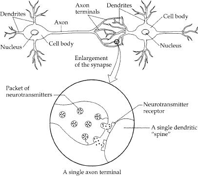
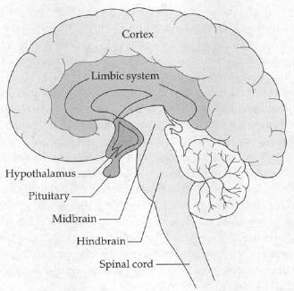

We are morbidly fascinated with the exotica of disease. They fill our made-for-television movies, our tabloids, and the book reports of adolescents hoping to become doctors someday. Victorians with Elephant Man’s disease, murderers with multiple personality disorders, ten-year-olds with progeria, idiot savants with autism, cannibals with kuru. Who could resist? But when it comes to the bread and butter of human misery, try a major depression. It can be life-threatening, it can destroy lives, demolish the families of sufferers. And it is dizzyingly common—the psychologist Martin Seligman has called it the common cold of psychopathology. Best estimates are that from 5 to 20 percent of us will suffer a major, incapacitating depression at some point in our lives, causing us to be hospitalized or medicated or nonfunctional for a significant length of time. Its incidence has been steadily increasing for decades—by the year 2020, depression is projected to be the second leading cause of medical disability on earth.
This chapter differs a bit from those that preceded it in which the concept of “stress” was at the forefront. Initially, that may not seem to be the case in our focus on depression. The two appear to be inextricably linked, however, and the concept of stress will run through every page of this chapter. It is impossible to understand either the biology or psychology of major depressions without recognizing the critical role played in the disease by stress.
To begin to understand this connection, it is necessary to get some sense of the disorder’s characteristics. We have first to wrestle with a semantic problem. Depression is a term that we all use in an everyday sense. Something mildly or fairly upsetting happens to us, and we get “the blues” for a while, followed by recovery. This is not what occurs in a major depression. One issue is chronicity—for a major depression to be occurring, the symptoms to have persisted for at least two weeks. The other is severity—this is a vastly crippling disorder that leads people to attempt suicide; its victims may lose their jobs, family, and all social contact because they cannot force themselves to get out of bed, or refuse to go to a psychiatrist because they feel they don’t deserve to get better. It is a horrific disease, and throughout this chapter I will be referring to this major, devastating form of depression, rather than the transient blues that we may casually signify with the term “feeling depressed.”
The Symptoms
The defining feature of a major depression is loss of pleasure. If I had to define a major depression in a single sentence, I would describe it as a “genetic/neurochemical disorder requiring a strong environmental trigger whose characteristic manifestation is an inability to appreciate sunsets.” Depression can be as tragic as cancer or a spinal cord injury. Think about what our lives are about. None of us will live forever, and on occasion we actually believe it; our days are filled with disappointments, failures, unrequited loves. Despite this, almost inconceivably, we not only cope but even feel vast pleasures. I, for example, am resoundingly mediocre at soccer, but nothing keeps me from my twice-weekly game. Invariably there comes a moment when I manage to gum up someone more adept than I; I’m panting and heaving and pleased, and there’s still plenty more time to play and a breeze blows and I suddenly feel dizzy with gratitude for my animal existence. What could be more tragic than a disease that, as its defining symptom, robs us of that capacity?
This trait is called anhedonia: hedonism is “the pursuit of pleasure,” anhedonia is “the inability to feel pleasure” (also often called dysphoria—I’ll be using the terms interchangeably). Anhedonia is consistent among depressives. A woman has just received the long-sought promotion; a man has just become engaged to the woman of his dreams—and, amid their depression, they will tell you how they feel nothing, how it really doesn’t count, how they don’t deserve it. Friendship, achievement, sex, food, humor—none can bring any pleasure.
This is the classic picture of depression, and some recent research, much of it built around work of the psychologist Alex Zautra of the University of Arizona, shows that the story is more complex. Specifically, positive and negative emotions are not mere opposites. If you take subjects and, at random times throughout the day, have them record how they are feeling at that moment, the frequencies of feeling good and feeling bad are not inversely correlated. There’s normally not much of a connection between how much your life is filled with strongly positive emotions and how much with strongly negative ones. Depression represents a state where those two independent axes tend toward collapsing into one inverse relationship—too few positive emotions and too many negative ones. Naturally, the inverse correlation isn’t perfect, and a lot of current research focuses on questions like: Are different subtypes of depression characterized more by the absence of positive emotions or the overabundance of negatives?
George Tooker, Woman at the Wall, egg tempera on gesso, 1974.
Accompanying major depression are great grief and great guilt. We often feel grief and guilt in the everyday sadnesses that we refer to as “depression.” But in a major depression, they can be incapacitating, as the person is overwhelmed with the despair. There can be complex layers of these feelings: not just obsessive guilt, for example, about something that has contributed to the depression, but obsessive guilt about the depression itself—what it has done to the sufferer’s family, the guilt of not being able to overcome depression, a life lived but once and wasted amid this disease. Small wonder that, worldwide, depression accounts for 800,000 suicides per year.*
In a subset of such patients, the sense of grief and guilt can take on the quality of a delusion. By this, I do not mean the thought-disordered delusions of schizophrenics; instead, delusional thinking in depressives is of the sort where facts are distorted, over- or underinterpreted to the point where one must conclude that things are terrible and getting worse, hopeless.
An example: a middle-aged man, out of the blue, has a major heart attack. Overwhelmed by his implied mortality, the transformation of his life, he slips into a major depression. Despite this, he is recovering from the attack reasonably well, and there is every chance that he will resume a normal life. But each day he’s sure he’s getting worse.
The hospital in which he is staying is circular in construction, with a corridor that forms a loop. One day, the nurses walk him once around the hospital before he collapses back in bed. The next day, he does two laps; he is getting stronger. That evening, when his family visits, he explains to them that he is sinking. “What are you talking about? The nurses said that you did two loops today; yesterday you only did one.” No, no, he shakes his head sadly, you don’t understand. He explains that the hospital is being renovated and, um, well, last night they closed off the old corridor and opened a newer, smaller one. And, you see, the distance around the new loop is less than half the distance of the old one, so two laps today is still less than I could do yesterday.
This particular incident occurred with the father of a friend, an engineer who lucidly described radii and circumferences, expecting his family to believe that the hospital had opened up a new corridor through the core of the building in one day. This is delusional thinking; the emotional energies behind the analysis and evaluation are disordered so that the everyday world is interpreted in a way that leads to depressive conclusions—it’s awful, getting worse, and this is what I deserve.
Cognitive therapists, like Aaron Beck of the University of Pennsylvania, even consider depression to be primarily a disorder of thought, rather than emotion, in that sufferers tend to see the world in a distorted, negative way. Beck and colleagues have conducted striking studies that provide evidence for this. For example, they might show a subject two pictures. In the first, a group of people are gathered happily around a dinner table, feasting. In the second, the same people are gathered around a coffin. Show the two pictures rapidly or simultaneously; which one is remembered? Depressives see the funeral scene at rates higher than chance. They are not only depressed about something, but see the goings-on around them in a distorted way that always reinforces that feeling. Their glasses are always half empty.
Another frequent feature of a major depression is called psychomotor retardation. The person moves and speaks slowly. Everything requires tremendous effort and concentration. She finds the act of merely arranging a doctor’s appointment exhausting. Soon it is too much even to get out of bed and get dressed. (It should be noted that not all depressives show psychomotor retardation; some may show the opposite pattern, termed psychomotor agitation.) The psychomotor retardation accounts for one of the important clinical features of depression, which is that severely, profoundly depressed people rarely attempt suicide. It’s not until they begin to feel a bit better. If the psychomotor aspects make it too much for this person to get out of bed, they sure aren’t going to find the often considerable energy needed to kill themselves.
A key point: many of us tend to think of depressives as people who get the same everyday blahs as you and I, but that for them it just spirals out of control. We may also have the sense, whispered out of earshot, that these are people who just can’t handle normal ups and downs, who are indulging themselves. (Why can’t they just get themselves together?) A major depression, however, is as real a disease as diabetes. Another set of depressive symptoms supports that view. Basically, many things in the bodies of depressives work peculiarly; these are called vegetative symptoms. You and I get an everyday depression. What do we do? Typically, we sleep more than usual, probably eat more than usual, convinced in some way that such comforts will make us feel better. These traits are just the opposite of the vegetative symptoms seen in most people with major depressions. Eating declines. Sleeping does as well, and in a distinctive manner. While depressives don’t necessarily have trouble falling asleep, they have the problem of “early morning wakening,” spending months on end sleepless and exhausted from three-thirty or so each morning. Not only is sleep shortened but, as mentioned in chapter 11, the “architecture” of sleep is different as well—the normal pattern of shifting between deep and shallow sleep, the rhythm of the onset of dream states, are disturbed.
An additional vegetative symptom is extremely relevant to this chapter, namely that major depressives often experience elevated levels of glucocorticoids. This is critical for a number of reasons that will be returned to, and helps to clarify what the disease is actually about. When looking at a depressive sitting on the edge of the bed, barely able to move, it is easy to think of the person as energy-less, enervated. A more accurate picture is of the depressive as a tightly coiled spool of wire, tense, straining, active—but all inside. As we will see, a psychodynamic view of depression shows the person fighting an enormous, aggressive mental battle—no wonder they have elevated levels of stress hormones.
Chapter 10 reviewed how glucocorticoids can impair aspects of memory that depend on the hippocampus, and the frequently elevated glucocorticoid levels in depression may help explain another feature of the disease, which is problems with hippocampal-dependent memory. The memory problems may reflect, in part, a lack of motivation on the part of the depressed person (why work hard on some shrink’s memory test when everything, everything, is hopeless and pointless?), or an anhedonic inability to respond to the rewards of remembering something in a task. Nonetheless, amid those additional factors, the pure process of storing and retrieving memories via the hippocampus is often impaired. As we’ll see shortly, this fits extraordinarily well with recent findings showing that the hippocampus is smaller than average in many depressives.
Another feature of depression also confirms that it is a real disease, rather than merely the situation of someone who simply cannot handle everyday ups and downs. There are multiple types of depressions, and they can look quite different. In one variant, unipolar depression, the sufferer fluctuates from feeling extremely depressed to feeling reasonably normal. In another form, the person fluctuates between deep depression and wild, disorganized hyperactivity. This is called bipolar depression or, more familiarly, manic depression. Here we run into another complication because, just as we use depression in an everyday sense that is different from the medical sense, mania has an everyday connotation as well. We may use the term to refer to madness, as in made-for-television homicidal maniacs. Or we could describe someone as being in a manic state when he is buoyed by some unexpected good news—talking quickly, laughing, gesticulating. But the mania found in manic depression is of a completely different magnitude. Let me give an example of the disorder: a woman comes into the emergency room; she’s bipolar, completely manic, hasn’t been taking her medication. She’s on welfare, doesn’t have a cent to her name, and in the last week she’s bought three Cadillacs with money from loan sharks. And, get this, she doesn’t even know how to drive. People in manic states will go for days on three hours of sleep a night and feel rested, will talk nonstop for hours at a time, will be vastly distractible, unable to concentrate amid their racing thoughts. In outbursts of irrational grandiosity, they will behave in ways that are foolhardy or dangerous to themselves and others—at the extreme, poisoning themselves in attempting to prove their immortality, burning down their homes, giving away their life savings to strangers. It is a profoundly destructive disease.
The strikingly different subtypes of depression and their variability suggest not just a single disease, but a heterogeneity of diseases that have different underlying biologies. Another feature of the disorder also indicates a biological abnormality. Suppose a patient comes to a doctor in the tropics. The patient is running a high fever that abates, only to come back a day or two later, abate again, return again, and so on every 48 to 72 hours. The doctor will recognize this instantly as malaria, because of the rhythmicity of the disorder. It has to do with the life cycle of the malarial parasite as it moves from red blood cells to the liver and spleen. The rhythmicity screams biology. In the same way, certain subtypes of depression have a rhythm. A manic-depressive may be manic for five days, severely depressed for the following week, then mildly depressed for half a week or so, and, finally, symptom-free for a few weeks. Then the pattern starts up again, and may have been doing so for a decade. Good things and bad things happen, but the same cyclic rhythm continues, which suggests just as much deterministic biology as in the life cycle of the malarial parasite. In another subset of depression the rhythm is annual, where sufferers get depressed during the winter. These are called seasonal affective disorders (SADs; “affective” is the psychiatric term for emotional responses), and are thought to be related to patterns of exposure to light; recent work has uncovered a class of retinal cells that respond to light intensity and, surprisingly, send their information directly into the limbic system, the emotional part of the brain. Again, the rhythmicity appears independent of external life events; a biological clock is ticking away in there that has something to do with mood, and something is seriously wrong with its ticking.
The Biology of Depression
Neurochemistry and Depression
Considerable evidence exists that something is awry with the chemistry of the brains of depressives. In order to appreciate that, it is necessary to learn a bit about how brain cells communicate with one another. The illustration in chapter 14 shows a schematic version of two neurons, the principal type of brain cell. If a neuron has become excited with some thought or memory (metaphorically speaking), its excitement is electrical—a wave of electricity sweeps from the dendrites over the cell body, down the axon to the axon terminals. When the wave of electrical excitation reaches the axon terminal, it releases chemical messengers that float across the synapse. These messengers—neurotransmitters—bind to specialized receptors on the adjacent dendrite, causing the second neuron to become electrically excited.
A minor piece of housekeeping, however: What happens to the neurotransmitter molecule after it has done its job and floats off the receptor? In some cases, it is recycled—taken back up by the axon terminal of the first neuron and repackaged for future use. Or it can be degraded in the synapse and the debris flushed out to sea (the cerebrospinal fluid, then to the blood, and then the urine). If these processes of clearing neurotransmitters out of the way fail (reuptake ceases or degradation stops or both), suddenly a lot more neurotransmitter remains in the synapse, giving a stronger signal to the second neuron than usual. Thus, the proper disposal of these powerful messengers is integral to normal neuronal communication.
There are trillions of synapses in the brain. Do we need trillions of chemically unique neurotransmitters? Certainly not. You can generate a seemingly infinite number of messages with a finite number of messengers; consider how many words we can form with the mere twenty-six letters in our alphabet. All you need are rules that allow for the same messenger to convey different meanings, metaphorically speaking, in different contexts. At one synapse, neurotransmitter A sends a message relevant to pancreatic regulation, while at another synapse the same neurotransmitter substance may pertain to adolescent crushes. There are many neurotransmitters, probably on the order of a few hundred, but certainly not trillions.
So that’s a primer on how neurons talk to each other with neurotransmitters. The best evidence suggests that depression involves abnormal levels of the neurotransmitters norepinephrine, serotonin, and dopamine. Before reviewing the evidence, it’s important to clear up a point. You are no doubt thinking, “Wasn’t there something about norepinephrine and the sympathetic nervous system many chapters ago?” Absolutely, and that proves the point about the varied roles played by any given neurotransmitter. In one part of the body (the heart, for example), norepinephrine is a messenger concerning arousal and the Four F’s, while in a different part of the nervous system, norepinephrine seems to have something to do with the symptoms of depression.

A neuron that has been excited conveys information to other neurons by means of chemical signals at synapses, the contact points between neurons. When the impulse reaches the axon terminal of the signaling neuron, it induces the release of neurotransmitter molecules. Transmitters diffuse across a narrow cleft and bind to receptors in the adjacent neuron’s dendritic spine.
Why is it likely that there is something wrong with norepinephrine, serotonin, or dopamine in depression? The best evidence is that most of the drugs that lessen depression increase the amount of signaling by these neurotransmitters. One class of antidepressants, called tricyclics (a reference to their biochemical structure), stops the recycling, or reuptake, of these neurotransmitters into the axon terminals. The result is that the neurotransmitter remains in the synapse longer and is likely to hit its respective receptor a second or third time. Another class of drugs, called MAO inhibitors, blocks the degradation of these neurotransmitters in the synapse by inhibiting the action of a crucial enzyme in that degradation, monoamine oxidase, or MAO. The result, again, is that more of the messenger remains in the synapse to stimulate the dendrite of the receiving neuron. These findings generate a pretty straightforward conclusion: if you use a drug that increases the amount of norepinephrine, serotonin, and dopamine in synapses throughout the brain, and as a result, someone’s depression gets better, there must have been too little of those neurotransmitters in the first place. Case closed.
Naturally, not so fast. As a first issue of confusion, is the problem with serotonin, dopamine, or norepinephrine? The tricyclics and MAO inhibitors work on all three neurotransmitter systems, making it impossible to tell which one is critical to the disease. People used to think norepinephrine was the culprit, when it was thought that those classical antidepressant drugs worked only on the norepinephrine synapse. These days, most of the excitement centers on serotonin, mainly because of the efficacy of reuptake inhibitors that work only on serotonin synapses (selective serotonin reuptake inhibitors, or SSRIs, of which Prozac is the most famous). However, there still remains some reason to think that the other two neurotransmitters remain part of the story, since some of the newest antidepressants appear to work on them more than on serotonin.*
A second piece of confusion is actually quite major. Is the defect in depression with these neurotransmitters really one of too little neurotransmitter in the synapse? You would think this was settled—the effective antidepressant drugs increase the amounts of these neurotransmitters in the synapse and alleviate depression; thus, the problem had to be too little of the stuff to begin with. However, some clinical data suggest that this might not be so simple.
The stumbling block has to do with timing. Expose the brain to some tricyclic antidepressant, and the amount of signaling with these neurotransmitters in the synapses changes within hours. However, give that same drug to a depressed person, and it takes weeks for the person to feel better. Something doesn’t quite fit. Two theories have arisen in recent years that might reconcile this problem with timing, and they are both extremely complicated.
Revisionist theory 1, the “it’s not too little neurotransmitter, it’s actually too much” hypothesis. First, some orientation. If somebody constantly yells at you, you stop listening. Analogously, if you inundate a cell with lots of a neurotransmitter, the cell will not “listen” as carefully—it will “down-regulate” (decrease) the number of receptors for that neurotransmitter, in order to decrease its sensitivity to that messenger. If, for example, you double the amount of serotonin reaching the dendrites of a cell and that cell down-regulates its serotonin receptors by 50 percent, the changes roughly cancel out. If the cell down-regulates less than 50 percent, the net result is more serotonin signaling in the synapse; if more than 50 percent, the result is actually less signaling in the synapse. In other words, how strong the signal is in a synapse is a function both of how loudly the first neuron yells (the amount of neurotransmitter released) and of how sensitively the second neuron listens (how many receptors it has for the neurotransmitter).
Okay, ready. This revisionist theory states that the original problem is that there is actually too much norepinephrine, serotonin, and/or dopamine in parts of the brains of depressives. What happens when you prescribe antidepressants that increase signaling of these neurotransmitters even further? At first, that should make the depressive symptoms worse. (Some psychiatrists argue that this actually does occur.) Over the course of a few weeks, however, the dendrites say, “This is intolerable, all this neurotransmitter; let’s down-regulate our receptors a whole lot.” If this occurs and, critical to the theory, more than compensates for the increased neurotransmitter signal, the depressive problem of excessive neurotransmitter signaling goes away: the person feels better.
Revisionist theory 2, “It really is too little norepinephrine, serotonin, and/or dopamine after all.” This theory is even more complicated than the first, and also requires orientation. Not only do dendrites contain receptors for neurotransmitters, but it turns out that on the axon terminals of the “sending” neuron as well there are receptors for the very neurotransmitters being released by that neuron. What possible purpose could these so-called autoreceptors serve? Neurotransmitters are released, float into the synapse, bind to the standard receptors on the second neuron. Some neurotransmitter molecules, however, will float back and wind up binding to the autoreceptors. They serve as some sort of feedback signal; if, say, 5 percent of the released neurotransmitter reaches the autoreceptors, the first neuron can count its toes, multiply by 20, and figure out how much neurotransmitter it has released. Then it can make some decisions—should I release more neurotransmitter or stop now? Should I start synthesizing more? and so on. If this process lets the first neuron do its bookkeeping on neurotransmitter expenditures, what happens if the neuron down-regulates a lot of these autoreceptors? Underestimating the amount of neurotransmitter it has released, the neuron will inadvertently start increasing the amount it synthesizes and discharges.
With this as background, here’s the reasoning behind the second theory (that there really is too little norepinephrine, serotonin, or dopamine in a part of the brain of depressives). Give the antidepressant drugs that increase signaling of these neurotransmitters. Because of the increased signaling, over the course of weeks there will be down-regulation of norepinephrine, serotonin, and dopamine receptors. Critical to this theory is the idea that the autoreceptors on the first neuron will down-regulate to a greater extent than the receptors on the second neuron. If that happens, the second neuron may not be listening as well, but the first one will be releasing sufficient extra neurotransmitter to more than overcome that. The net result is enhanced neurotransmitter signaling, and depressive symptoms abate. (This mechanism may explain the efficacy of electroconvulsive therapy, ECT, or “shock therapy.” For decades psychiatrists have used this technique to alleviate major depressions, and no one has quite known why it works. It turns out that among its many effects ECT decreases the number of norepinephrine autoreceptors, at least in experimental animal models.)
If you are confused by now, you are in some good company, as the entire field is extremely unsettled. Norepinephrine, serotonin, or dopamine? Too much or too little signaling? If it is, for example, too little serotonin signaling, is it because too little serotonin is being released into synapses, or because there is some defect blunting the sensitivity of serotonin receptors? (To give you a sense of how big a can of worms that one is, there are currently recognized more than a dozen different types of serotonin receptors, with differing functions, efficacies, and distributions in the brain.) Maybe there are a variety of different neurochemical routes for getting to a depression, and different pathways are associated with different subtypes of depression (unipolar versus manic depression, or one that is triggered by outside events versus one that runs with its own internal clockwork, or one dominated by psychomotor retardation versus one dominated by suicidalism). This is a very reasonable idea, but the evidence for it is still scant.
Amid all those questions, another good one—why does having too much or too little of these neurotransmitters cause a depression? There are a lot of links between these neurotransmitters and function. For example, serotonin is thought to have something to do with incessant ideation in depression, the uncontrollable wallowing in those dark thoughts. Connected with this, SSRIs are often effective on people with obsessive-compulsive disorder. There is a commonality here: in the depressive case, it is the obsessive sense of failure, of doom, of despair, while in the latter case, it can be obsessive worries that you left the gas on at home when you left, that your hands are dirty and need to be washed, and so on. Trapped in a mind that just circles and circles around the same thoughts or feelings.
Norepinephrine is thought to play a different role in the symptoms of depression. The major pathway that utilizes norepinephrine is an array of projections from a brain region called the locus ceruleus. That projection extends diffusely throughout the brain and seems to play a role in alerting other brain regions—increasing their baseline level of activation, lowering their threshold for responding to outside signals. Thus, a shortage of norepinephrine in this pathway might begin to explain the psychomotor retardation.
Dopamine, meanwhile, has something to do with pleasure, a connection that will be reviewed at length in chapter 16. Several decades ago, some neuroscientists made a fundamental discovery. They had implanted electrodes into the brains of rats and stimulated areas here and there, seeing what would happen. By doing so, they found an extraordinary area of the brain. Whenever this area was stimulated, the rat became unbelievably happy. So how can one tell when a rat is unbelievably happy? You ask the rat to tell you, by charting how-many times it is willing to press a lever in order to be rewarded with stimulation in that part of the brain. It turns out that rats will work themselves to death on that lever to get stimulation. They would rather be stimulated there than get food when they are starving, or have sex, or receive drugs even when they’re addicted and going through withdrawal. The region of the brain targeted in these studies was promptly called the “pleasure pathway” and has been famous since.
That humans have a pleasure pathway was discovered shortly afterward by stimulating a similar part of the human brain during neurosurgery.* The results are pretty amazing. Something along the lines of “Aaaaah, boy, that feels good. It’s kind of like getting your back rubbed but also sort of like sex or playing in the backyard in the leaves when you’re a kid and Mom calling you in for hot chocolate and then you get into your pajamas with the feet….” Where can we sign up?
This pleasure pathway seems to make heavy use of dopamine as a neurotransmitter (and in chapter 16, we’ll see how dopamine signals the anticipation of reward more than it signals reward itself). The strongest evidence for this is the ability of drugs that mimic dopamine, such as cocaine, to act as euphoriants. Suddenly, it seems plausible to hypothesize that depression, which is characterized above all by dysphoria, might involve too little dopamine and, thus, dysfunction of those pleasure pathways.
Thus, these are the big three when it comes to the neurotransmitters implicated in depression, with attention these days probably being the most for serotonin and the least for dopamine. All of the leading antidepressant drugs—the SSRIs, and older classes such as tricyclics or MAO inhibitors—work by altering the levels of one or more of these three neurotransmitters. At this point, there is nothing close to resembling a science as to which sort of person will respond best to which type of antidepressants.
Naturally, there’s a spate of other neurotransmitters that may be involved. One particularly interesting one is called Substance P. Decades of work have shown that Substance P plays a role in pain perception, with a major role in activating the spinal cord pathways discussed in chapter 9. Remarkably, some recent studies indicate that drugs that block the action of Substance P can work as antidepressants in some individuals. What’s this about? Perhaps the sense of depression as a disease of “psychic pain” may be more than just a metaphor.
Neuroanatomy and Depression
I introduce an illustration here of what the brain looks like, to consider a second way in which brain function might be abnormal in depressives, in addition to the neurochemistry discussed. One region regulates processes like your breathing and heart rate. It includes the hypothalamus, which is busy releasing hormones and instructing the autonomic nervous system. If your blood pressure drops drastically, causing a compensatory stress-response, it is the hypothalamus, midbrain, and hindbrain that kick into gear. All sorts of vertebrates have roughly the same connections here.

The triune brain.
Layered on top of that is a region called the limbic system, the functioning of which is related to emotion. As mammals, we have large limbic systems; lizards have relatively tiny limbic systems—they are not noted for the complexity of their emotional lives. If you get a stress-response from smelling the odor of a threatening rival, it’s your limbic system that is involved.
Above that is the cortex. Everyone in the animal kingdom has some, but it is a real primate specialty. The cortex does abstract cognition, invents philosophy, remembers where your car keys are. The stuff of the previous chapter.
Now think for a second. Suppose you are gored by an elephant. You may feel a certain absence of pleasure afterward, maybe a sense of grief. Throw in a little psychomotor retardation—you’re not as eager for your calisthenics as usual. Sleeping and feeding may be disrupted, glucocorticoid levels may be a bit on the high side. Sex may lose its appeal for a while. Hobbies are not as enticing; you don’t jump up to go out with friends; you pass up that all-you-can-eat buffet. Sound like some of the symptoms of a depression?
Now, what happens during a depression? You think a thought about your mortality or that of a loved one; you imagine children in refugee camps, the rain forests disappearing and endless species of life evaporating, late Beethoven string quartets, and suddenly you experience some of the same symptoms as after being gored by the elephant. On an incredibly simplistic level, you can think of depression as occurring when your cortex thinks an abstract negative thought and manages to convince the rest of the brain that this is as real as a physical stressor. In this view, people with chronic depressions are those whose cortex habitually whispers sad thoughts to the rest of the brain. Thus, an astonishingly crude prediction: cut the connections between the cortex and the rest of a depressive’s brain, and the cortex will no longer be able to get the rest of the brain depressed.
Remarkably, it actually works sometimes. Neurosurgeons may perform this procedure on people with vastly crippling depressions that are resistant to drugs, ECT, or other forms of therapy. Afterward, depressive symptoms seem to abate.*
Obviously, this is a simplified picture—no one actually disconnects the entire cortex from the rest of the brain. After all, the cortex does more than mope around feeling bad about the final chapter of Of Mice and Men. The surgical procedure, called a cingulotomy, or a cingulum bundle cut, actually disconnects just one area toward the front of the cortex, called the anterior cingulate cortex (ACC). The ACC is turning out to have all the characteristics of a brain region you’d want to take offline in a major depression. It’s a part of the brain that is very concerned with emotions. Show people arrays of pictures: in one case, ask them to pay attention to the emotions being expressed by people in the pictures; in another case, ask them to pay attention to details like whether these are indoor or outdoor photographs. In only the former case do you get activation of the ACC.
And the emotions that the ACC is involved in seem to be negative ones. Induce a positive state in someone by showing something amusing, and ACC metabolism decreases. In contrast, if you electrically stimulate the ACC in people, they feel a shapeless sense of fear and foreboding. Moreover, neurons in the ACC, including in humans, respond to pain of all sorts. But the ACC response isn’t really about the pain; it more concerns feelings about the pain. As was discussed in chapter 9, give someone a hypnotic suggestion that they will not feel the pain of dipping their hand into ice water. The primary parts of the brain that get pain projections from the spinal cord get just as active as if there were no hypnotic suggestion. But this time, the ACC doesn’t activate.
In addition, the ACC and adjacent brain regions activate when you show widows pictures of their lost loved ones (versus pictures of strangers). As another example of this, put a volunteer in a brain-imaging machine and, from inside, ask them to play some game with two other people, via a computer console. Rig up the flow of the game so that, over time, the other two (actually, a computer program) gradually begin just playing with each other, excluding the test subject. Neuronal activity in the ACC lights up, and the more left out the person feels, the more intensely the ACC activates. How do you know this has something to do with that dread junior high school feeling of being picked last for the team? Because of a clever control in the study: set the person up to play with the supposed other two players. Once again, it winds up that the other two only play against each other. The difference, this time, though, is that early on the subject is told there’s been a technical glitch and that their computer console isn’t working. Excluded because of a snafu in the technology, there’s no ACC activation.
Given these functions of the ACC, it is not surprising that its resting level of activity tends to be elevated in people with a depression—this is the fear and pain and foreboding churning away at those neurons. Interestingly, another part of the brain, called the amygdala, seems to be hyperactive in depressives as well. We will hear lots about the role of the amygdala in fear and anxiety in the next chapter. However, in depressives, the amygdala seems to have been recruited into a different role. Show a depressed person a fearful human face and his amygdala doesn’t activate all that much (in contrast to the response you’d see in the amygdala of a control subject). But show him a sad face and the amygdala gets a highly exaggerated activation.
Sitting just in front of the ACC is the frontal cortex which, as we saw in chapter 11, is one of the most distinctly human parts of the brain. Work by Richard Davidson of the University of Wisconsin has shown that one subregion called the prefrontal cortex (PFC) seems highly responsive to mood, and in a lateralized way. Specifically, activation of the left PFC is associated with positive moods, and activation of the right PFC, with negative. For example, induce a positive state in someone (by asking him to describe the happiest day of his life), and the left PFC lights up, in proportion to the person’s subjective assessment of his pleasure. Ask him to remember a sad event, and the right PFC dominates. Similarly, separate an infant monkey from its mother and right PFC metabolism rises while left PFC decreases. Thus, not surprisingly, in depressives, there is decreased left PFC activity and elevated activity in the right PFC.
There are a few other anatomical changes in the brain in depression, but to make sense of those, we have to consider what hormones have to do with the disease.
Genetics and Depression
It is hard to look at the biology of anything these days without genes coming into the picture, and depression is no exception. Depression has a genetic component. As a first observation, depression runs in families. For a long time, that would have been sufficient evidence for some folks that there is a genetic link, but this conclusion is undone by the obvious fact that not only do genes run in families, environment does as well. Growing up in a poor family, an abusive family, a persecuted family, can all increase the risk of depression running through that family without genes having anything to do with it.
So we look for a tighter relationship. The more closely related two individuals are, the more genes they share in common and, as it turns out, the more likely they are to share a depressive trait. As one of the most telling examples of this, take any two siblings (who are not identical twins). They share something like 50 percent of their genes. If one of them has a history of depression, the other has about a 25 percent likelihood, considerably higher than would be expected by chance. Now, compare two identical twins, who share all of their genes in common. And if one of them is depressive, the other has a 50 percent chance. This is quite impressive—the more genes in common, the more likelihood of sharing the disease. But there remains a confound: the more genes people share within a family, the more environment they share as well (starting with the fact that identical twins grow up treated more similarly than are non-identical twins).
Tighten the relationship further. Look at children who were adopted at an early age. Consider those whose biological mother had a history of depression, but whose adoptive mother did not. They have an increased risk of depression, suggesting a genetic legacy shared with their biological mother. But the confound there, as we saw in chapter 6, is that “environment” does not begin at birth, but begins much earlier, with the circulatory environment shared in utero with one’s biological mother.
For any card-carrying molecular biologist in the twenty-first century, if you want to prove that genes have something to do with depression, you’re going to have to identify the specific genes, the specific stretches of DNA that code for specific proteins that increase the risk for depression. As we’ll see shortly, precisely that has occurred in recent years.
Immunology and Depression
This subsection did not exist in previous editions of this book. Immunity is about fighting off pathogens, depression is about feeling sad—unrelated subjects. Well, they can be related, but in an idiotically obvious way—like, duh, being sick can be depressing.
But it’s more complicated than that. Chronic illness that involves overactivation of the immune system (for example, chronic infections, or an autoimmune disease where the immune system has accidentally activated and is attacking some part of your body) is more likely to cause depression than other equally severe and prolonged illnesses that don’t involve the immune system. Some more threads of interconnection involve the cytokines that act as messengers between immune cells. As you’ll recall from chapter 8, cytokines can also get into the brain, where they can stimulate CRH release. More recently, it’s becoming clear that they also interact with norepinephrine, dopamine, and serotonin systems. Critically, cytokines can cause depression. This is shown in animal models of depression. Furthermore, certain types of cancers are sometimes treated with cytokines (to enhance immune function), and this typically results in depression. So this represents a new branch of study for biological psychiatry—the interactions between immune function and mood.
Endocrinology and Depression
Abnormal levels of a number of different hormones often go hand in hand with depression. To begin, people who secrete too little thyroid hormone can develop major depressions and, when depressed, can be atypically resistant to antidepressant drugs working. This is particularly important because many people, seemingly with depressions of a purely psychiatric nature, turn out to have thyroid disease.
There is another aspect of depression in which hormones may play a role. The incidence of major, unipolar depression differs greatly, with women suffering far more than men. Even when you consider manic depression, where there is no sex difference in its incidence, bipolar women have more depressive episodes than do bipolar men.
Why this female bias? It has nothing to do with the obvious first guess, which is that women are more likely to see a health professional for depression than are men. The difference holds up even when such reporting biases are controlled for. One theory, from the school of cognitive therapy, concentrates on the ways in which women and men tend to think differently. When something upsetting happens, women are more likely to ruminate over it—think about it or want to talk about it with someone else. And men, terrible communicators that they so often are, are more likely to want to think about anything but the problem, or even better, go and do something—exercise, use power tools, get drunk, start a war. A ruminative tendency, the cognitive psychologists argue, makes you more likely to become depressed.
Another theory about the sex difference is psychosocial in nature. As we will see, much theorizing about the psychology of depression suggests that it is a disorder of lack of power and control, and some scientists have speculated that because women in so many societies traditionally have less control over the circumstances of their lives than do men, they are at greater risk for depression. In support of this idea, some psychiatrists have produced data suggesting that the elevated rates of depression in women decline to the levels seen in men in some traditional societies in which women don’t have a subordinate role. Yet another theory suggests that men really do have as high a rate of depression as do women, but they are simply more likely to mask it with substance abuse.
All of these ideas are reasonable, although they run into trouble when one considers that women and men, as noted, have the same rate of bipolar depression; it is only unipolar depression that is more common among women. These theories seem particularly weak in their failure to explain a major feature of female depressions, namely, that women are particularly at risk for depressions at certain reproductive points: menstruation, menopause, and most of all, the weeks immediately after giving birth. A number of researchers believe such increased risks are tied to the great fluctuations that occur during menstruation, menopause, and parturition in two main hormones: estrogen and progesterone. As evidence, they cite the fact that women can get depressed when they artificially change their estrogen or progesterone levels (for example, when taking birth-control pills). Critically, both of these hormones can regulate neurochemical events in the brain, including the metabolism of neurotransmitters such as norepinephrine and serotonin. With massive changes in hormone levels (a thousandfold for progesterone at the time of giving birth, for example), current speculation centers on the possibility that the ratio of estrogen to progesterone can change radically enough to trigger a major depression. This is a new area of research with some seemingly contradictory findings, but there is more and more confidence among scientists that there is a hormonal contribution to the preponderance of female depressions.
Obviously, the next subject in a section on hormones and depression will have to look at glucocorticoids. But given how central this is to the whole venture of this book, the subject requires expansion.
How Does Stress Interact
with the Biology of Depression?
Stress, Glucocorticoids, and the Onset of Depression
The first stress-depression link is an obvious one, in that stress and depression tend to go together. This can run in two directions. First, studies of what is called “stress generation” among depressives look at the fact that people who are prone to depression tend to experience stressors at a higher than expected rate. This is even seen when comparing them to individuals with other psychiatric disorders or health problems. Much of this appears to be stressors built around lack of social support. This raises the potential for a vicious cycle to emerge. This is because if you interpret the ambiguous social interactions around you as signs of rejection, and respond as if you have been rejected, it can increase the chances of winding up socially isolated, thereby confirming your sense that you have been rejected….
But the major way in which people think about a link between stress and depression, and the one that concerns us here, has causality running in the other direction. Specifically, people who are undergoing a lot of life stressors are more likely than average to succumb to a major depression, and people sunk in their first major depression are more likely than average to have undergone recent and significant stress. Obviously, not everyone who undergoes major stressors sinks into depression, and what those individual differences are about should be clearer as we proceed through this chapter.
As noted, some people have the grave misfortune of suffering from repeated depressive episodes, ones that can take on a rhythmic pattern stretching over years. When considering the case histories of those people, stressors emerge as triggers for only the first few depressions. In other words, have two, three major bouts of depression and, statistically, you are no more at risk for subsequent major depression than anyone else. But somewhere around the fourth depression or so, a mad clockwork takes over, and the depressive waves crash, regardless of whether the outside world pummels you with stressors. What that transition is about will be considered below.
Laboratory studies also link stress and the symptoms of depression. Stress a lab rat, and it becomes anhedonic. Specifically, it takes a stronger electrical current than normal in the rat’s pleasure pathways to activate a sense of pleasure. The threshold for perceiving pleasure has been raised, just as in a depressive.
Critically, glucocorticoids can do the same. A key point in chapter 10 was how glucocorticoids and stress could disrupt memory. Part of the evidence for that came from people with Cushing’s syndrome (as a reminder, that is a condition in which any of a number of different types of tumors wind up causing vast excesses of glucocorticoids in the bloodstream), as well as from people prescribed high doses of glucocorticoids to treat a number of ailments. It has also been known for decades that a significant subset of Cushingoid patients and patients prescribed synthetic glucocorticoids become clinically depressed, independent of memory problems. This has been a bit tricky to demonstrate. First, when someone is initially treated with synthetic glucocorticoids, the tendency is to get, if anything, euphoric and even manic, perhaps for a week or so before the depression kicks in. You can immediately guess that we are dealing with one of our dichotomies between short- and long-term stress physiology; chapter 16 will explore in even more detail where that transient euphoria comes from. As a second complication, does someone with Cushing’s syndrome or someone taking high pharmacological doses of synthetic glucocorticoids get depressed because glucocorticoids cause that state, or is it because they recognize they have a depressing disease? You show it is the glucocorticoids that are the culprits by demonstrating higher depression rates in this population than among people with, for example, the same disease and the same severity but not receiving glucocorticoids. At this stage, there’s also not much of a predictive science to this phenomenon. For example, no clinician can reliably predict beforehand which patient is going to get depressed when put on high-dose glucocorticoids, let alone at what dose, and whether it is when the dose is raised or lowered to that level. Nonetheless, have lots of glucocorticoids in the bloodstream and the risk of a depression increases.
Stress and glucocorticoids tangle up with biology in predisposing a person toward depression in an additional, critical way. Back to that business about there being a genetic component to depression. Does this mean that if you have “the gene” (or genes) “for” depression, that’s it, you’re up the creek, it’s inevitable? Obviously not, and the best evidence for this is that factoid about identical twins. One has depression and the other, sharing all the same genes, has about a 50 percent chance of having the disease as well, a much higher rate than in the general population. There, pretty solid evidence for genes being involved. But flip this the other way. Share every single gene with someone who is depressive and you still have a 50 percent chance of not having the disease.
Genes are rarely about inevitability, especially when it comes to humans, the brain, or behavior. They’re about vulnerability, propensities, tendencies. In this case, genes increase the risk of depression only in certain environments: you guessed it, only in stressful environments. This is shown in a number of ways, but most dramatically in a recent study by Avshalom Caspi at King’s College, London. Scientists identified a certain gene in humans that increases the risk of depression. More specifically, it is a gene that comes in a few different “allelic versions”—a few different types or flavors that differ slightly in function; have one of those versions, and you’re at increased risk. What that gene is I’m not telling yet; I’m saving it for the end of this chapter, as it is a doozy But the key thing is that having version X of this gene Z doesn’t guarantee you get depression, it just increases your risk. And, in fact, knowing nothing more about someone than which version of gene Z she has doesn’t increase your odds of predicting whether she gets depressed. Version X increases depression risk only when coupled with a history of repeated major stressors. Amazingly, the same has been shown with studies of some nonhuman primate species, who carry a close equivalent of that gene Z. It’s not the gene that causes it. It’s that the gene interacts with a certain environment. More specifically, a gene that makes you vulnerable in a stressful environment.
Glucocorticoid profiles once a depression has been established
Not surprisingly, glucocorticoid levels are typically abnormal in people who are clinically depressed. A relatively infrequent subtype of depression, called “atypical depression,” is dominated by the psychomotor features of the disease—an incapacitating physical and psychological exhaustion. Just as is the case with chronic fatigue syndrome, atypical depression is characterized by lower than normal glucocorticoid levels. However, the far more common feature of depression is one of an overactive stress-response—somewhat of an overly activated sympathetic nervous system and, even more dramatically, elevated levels of glucocorticoids. This adds to the picture that depressed people, sitting on the edge of their beds without the energy to get up, are actually vigilant and aroused, with a hormonal profile to match—but the battle is inside them.
Research stretching back some forty years has explored why, on a nuts-and-bolts level, glucocorticoid levels are often elevated in depression. The elevated levels appear to be due to too much of a stress signal from the brain (back to chapter 2—remember that the adrenals typically secrete glucocorticoids only when they are commanded to by the brain, via the pituitary), rather than the adrenals just getting some depressive glucocorticoid hiccup all on their own now and then. Moreover, the excessive secretion of glucocorticoids is due to what is called feedback resistance—in other words, the brain is less effective than it should be at shutting down glucocorticoid secretion. Normally, the levels of this hormone are tightly regulated—the brain senses circulating glucocorticoid levels, and if they get higher than desired (the “desired” level shifts depending on whether events are calm or stressful), the brain stops secreting CRH. Just like the regulation of water in a toilet bowl tank. In depressives, this feedback regulation fails—concentrations of circulating glucocorticoids that should shut down the system fail to do so, as the brain does not sense the feedback signal.*
What are the consequences of elevated glucocorticoid levels before and during a depression?
The first most critical question to ask is, how does an excess of glucocorticoids increase the risk of depression? A preceding section detailed, at great length, the considerable confusion about whether depression is about serotonin or norepinephrine or dopamine. To the extent that this is the case, the glucocorticoid angle fits well, in that the hormones can alter features of all three neurotransmitter systems—the amount of neurotransmitter synthesized, how fast it is broken down, how many receptors there are for each neurotransmitter, how well the receptors work, and so on. Moreover, stress has been shown to cause many of the same changes as well. Sustained stress will deplete dopamine from those “pleasure” pathways, and norepinephrine from that alerting locus ceruleus part of the brain. Moreover, stress alters all sorts of aspects of the synthesis, release, efficacy, and breakdown of serotonin. It is not clear which of those stress effects are most important, simply because it is not clear which neurotransmitter or neurotransmitters are most important. However, it is probably safe to say that whatever neurochemical abnormalities wind up being shown definitively to underlie depression, there is precedent for stress and glucocorticoids causing those same abnormalities.
Those elevated glucocorticoid levels appear to have some other consequences as well. They may play a role, for example, in the fact that depressive patients often are at least mildly immunosuppressed, and are more prone to osteoporosis. Moreover, prolonged major depression increases the risk of heart disease about three- to fourfold, even after controlling for smoking and alcohol consumption, and the glucocorticoid excess is likely to contribute to that as well.
And there may be more consequences. Think back to chapter 10 and its discussion of the many ways in which glucocorticoids can damage the hippocampus. As that literature emerged in the 1980s, it immediately suggested that there may be problems with the hippocampus in people with major depression. This speculation was reinforced by the fact that the type of memory most often impaired in depression—declarative memory—is mediated by the hippocampus. As was discussed in chapter 10, there is atrophy of the hippocampus in long-term depression. The atrophy emerges as a result of the depression (rather than precedes it), and the longer the depressive history, the more atrophy and the more memory problems. While no one has explicitly shown yet that the atrophy occurs only in those depressives with the elevated glucocorticoid levels, the atrophy is most common in the subtypes of depression in which the glucocorticoid excess is most common. Chronic depression has also been associated in some studies with decreased volume in the frontal cortex. This was initially puzzling for those of us who view the world through glucocorticoid-tinted glasses, but has recently been resolved. In the rat, the hippocampus is overwhelmingly the target in the brain for glucocorticoid action, as measured by the density of receptors for the hormone; however, in the primate brain, the hippocampus and frontal cortex seem to be equally and markedly sensitive to glucocorticoids.
So some pretty decent circumstantial evidence suggests that the glucocorticoid excess of depression may have something to do with the decreased volume of the hippocampus and frontal cortex. Chapter 10 noted an array of bad things that glucocorticoids could do to neurons. Some obsessively careful studies have shown loss of cells in the frontal cortex accompanying the volume loss in depression—as one point of confusion, it is those supportive glial cells rather than neurons that are lost. But in the hippocampus, no one has a clue yet; it could be the killing or atrophying of neurons, the inhibition of the birth of new neurons, or all the above.* Whatever the explanation is at the cellular level, it appears to be permanent; years to decades after these major depressions have been gotten under control (typically with medication), the volume loss is still there.
Anti-glucocorticoids as antidepressants
The glucocorticoid-depression link has some important implications. When I first introduced that link at the beginning of the chapter, it was meant to give some insight into the flavor of what a depression is like—a person looks like an enervated sea sponge, sitting there motionless on the edge of his bed, but he’s actually boiling, in the middle of an internal battle. Tacit in that description was the idea that undergoing a depression is actually immensely stressful, and, therefore, among other things, stimulates glucocorticoid secretion. The data just reviewed suggest the opposite scenario—stress and glucocorticoid excess can be a cause of depression, rather than merely a consequence.
If that is really the case, then a novel clinical intervention should work: take one of those depressives with high glucocorticoid levels, find some drug that works on the adrenals to lower glucocorticoid secretion, and the depression should lessen. And, very exciting, that has been shown. The approach, though, is filled with problems. You don’t want to suppress glucocorticoid levels too much because, umpteen pages into this book, it should be apparent by now that those hormones are pretty important. Moreover, the “adrenal steroidogenesis inhibitors,” as those drugs are called, can have some nasty side effects. Nonetheless, some solid reports have shown them to have antidepressant effects in people with high-glucocorticoid depressions.
Another version of the same approach is to use a drug that blocks glucocorticoid receptors in the brain. These exist and are relatively safe, and there’s now decent evidence that they work as well.* A relatively obscure hormone called DHEA, which has some ability to block glucocorticoid access to its receptor, has been reported to have some antidepressant qualities as well. Thus, these recent studies not only teach us something about the bases of depression, but may open the way for a whole new generation of medications for the disease.
Some investigators have built on these observations with a fairly radical suggestion. For those biological psychiatrists concerned with the hormonal aspects of depression, the traditional glucocorticoid scenario is outlined above. In it, depressions are stressful and raise glucocorticoid levels; when someone is treated with antidepressants, the abnormal neurochemistry (related to serotonin, norepinephrine, etc.) is normalized, lessening the depression and, by the way, making life feel less stressful, with glucocorticoid levels returning to normal as a by-product. The new scenario is the logical extension of the inverted causality also just discussed. In this version, for any of a number of reasons, glucocorticoid levels rise in someone (because the person is under a lot of stress, because something about the regulatory control of glucocorticoids is awry in that person), causing changes in the chemistry of serotonin (or norepinephrine, etc.) and a depression. In this scenario, antidepressants work by normalizing glucocorticoid levels, thereby normalizing the brain chemistry and alleviating the depression.
For this view to be supported, it has to be shown that the primary mechanism of action of the different classes of antidepressants is to work on the glucocorticoid system, and that changes in glucocorticoid levels precede the changes in brain chemistry or depressive symptoms. A few researchers have presented evidence that antidepressants work to rapidly alter numbers of glucocorticoid receptors in the brain, altering regulatory control of the system and lowering glucocorticoid levels, and these changes precede changes in the traditional symptoms of depression; other researchers have not observed this. As usual, more research is needed. But even if it turns out that, in some patients, depression is driven by elevated glucocorticoid levels (and recovery from depression thus mediated by reduction of those levels), that can’t be the general mechanism of the disease in all cases: only about half of depressives actually have elevated glucocorticoid levels. In the other half, the glucocorticoid system seems to work perfectly normally. Perhaps this particular stress/depression link is relevant only during the first few rounds of someone’s depression (before the endogenous rhythmicity kicks in), or only in a subset of individuals.
We have now seen ways in which stress and glucocorticoids are intertwined with the biology of depression. That intertwining is made even tighter when considering the psychological picture of the disease.
Stress and the Psychodynamics
of Major Depressions
I have to begin with Freud. I know it is obligatory to dump on Freud, and some of it is deserved, but there is much that he still has to offer. I can think of few other scientists who, nearly a century after their major contributions, are still considered important and correct enough for anyone to want to bother pointing out their errors instead of just consigning them to the library archives.
Freud was fascinated with depression and focused on the issue that we began with—why is it that most of us can have occasional terrible experiences, feel depressed, and then recover, while a few of us collapse into major depression (melancholia)? In his classic essay “Mourning and Melancholia” (1917), Freud began with what the two have in common. In both cases, he felt, there is the loss of a love object. (In Freudian terms, such an “object” is usually a person, but can also be a goal or an ideal.) In Freud’s formulation, in every loving relationship there is ambivalence, mixed feelings—elements of hatred as well as love. In the case of a small, reactive depression—mourning—you are able to deal with those mixed feelings in a healthy manner: you lose, you grieve, and then you recover. In the case of a major melancholic depression, you have become obsessed with the ambivalence—the simultaneity, the irreconcilable nature of the intense love alongside the intense hatred. Melancholia—a major depression—Freud theorized, is the internal conflict generated by this ambivalence.
This can begin to explain the intensity of grief experienced in a major depression. If you are obsessed with the intensely mixed feelings, you grieve doubly after a loss—for your loss of the loved individual and for the loss of any chance now to ever resolve the difficulties. “If only I had said the things I needed to, if only we could have worked things out”—for all of time, you have lost the chance to purge yourself of the ambivalence. For the rest of your life, you will be reaching for the door to let you into a place of pure, unsullied love, and you can never reach that door.
It also explains the intensity of the guilt often experienced in major depression. If you truly harbored intense anger toward the person along with love, in the aftermath of your loss there must be some facet of you that is celebrating, alongside the grieving. “He’s gone; that’s terrible but…thank god, I can finally live, I can finally grow up, no more of this or that.” Inevitably, a metaphorical instant later, there must come a paralyzing belief that you have become a horrible monster to feel any sense of relief or pleasure at a time like this. Incapacitating guilt.
This theory also explains the tendency of major depressives in such circumstances to, oddly, begin to take on some of the traits of the lost loved/hated one—and not just any traits, but invariably the ones that the survivor found most irritating. Psychodynamically, this is wonderfully logical. By taking on a trait, you are being loyal to your lost, beloved opponent. By picking an irritating trait, you are still trying to convince the world you were right to be irritated—you see how you hate it when I do it; can you imagine what it was like to have to put up with that for years? And by picking a trait that, most of all, you find irritating, you are not only still trying to score points in your argument with the departed, but you are punishing yourself for arguing as well. Out of the Freudian school of thought has come one of the more apt descriptions of depression—“aggression turned inward.” Suddenly the loss of pleasure, the psychomotor retardation, the impulse to suicide all make sense. As do the elevated glucocorticoid levels. This does not describe someone too lethargic to function; it is more like the actual state of a patient in depression, exhausted from the most draining emotional conflict of his or her life—one going on entirely within. If that doesn’t count as psychologically stressful, I don’t know what does.
Like other good parts of Freud, these ideas are empathic and fit many clinical traits; they just feel “right.” But they are hard to assimilate into modern science, especially biologically oriented psychiatry. There is no way to study the correlation between serotonin receptor density and internalization of aggression, for example, or the effects of estrogen-progesterone ratios on love-hate ratios. The branch of psychological theorizing about depression that seems most useful to me, and is most tightly linked to stress, comes from experimental psychology. Work in this field has generated an extraordinarily informative model of depression.
Stress, Learned Helplessness,
and Depression
In order to appreciate the experimental studies underlying this model, recall that in the preceding chapter on psychological stress, we saw that certain features dominated as psychologically stressful: a loss of control and of predictability within certain contexts, a loss of outlets for frustration, a loss of sources of support, a perception of life worsening. In one style of experiment, pioneered by the psychologists Martin Seligman and Steven Maier, animals are exposed to pathological amounts of these psychological stressors. The result is a condition strikingly similar to a human depression.
Although the actual stressors may differ, the general approach in these studies always emphasizes repeated stressors with a complete absence of control on the part of the animal. For example, a rat may be subjected to a long series of frequent, uncontrollable, and unpredictable shocks or noises, with no outlets.
After awhile, something extraordinary happens to that rat. This can be shown with a test. Take a fresh, unstressed rat, and give it something easy to learn. Put it in a room, for example, with the floor divided into two halves. Occasionally, electricity that will cause a mild shock is delivered to one half, and just beforehand, there is a signal indicating which half of the floor is about to be electrified. Your run-of-the-mill rat can learn this “active avoidance task” easily, and within a short time it readily and calmly shifts the side of the room it sits in according to the signal. Simple. Except for a rat who has recently been exposed to repeated uncontrollable stressors. That rat cannot learn the task. It does not learn to cope. On the contrary, it has learned to be helpless.
This phenomenon, called learned helplessness, is quite generalized; the animal has trouble coping with all sorts of varied tasks after its exposure to uncontrollable stressors. Such helplessness extends to tasks having to do with its ordinary life, like competing with another animal for food, or avoiding social aggression. One might wonder whether the helplessness is induced by the physical stress of receiving the shocks or, instead, the psychological stressor of having no control over or capacity to predict the shocks. It is the latter. The clearest way to demonstrate this is to “yoke” pairs of rats—one gets shocked under conditions marked by predictability and a certain degree of control, the other rat gets the identical pattern of shocks, but without the control or predictability. Only the latter rat becomes helpless.
Seligman argues persuasively that animals suffering from learned helplessness share many psychological features with depressed humans. Such animals have a motivational problem—one of the reasons that they are helpless is that they often do not even attempt a coping response when they are in a new situation. This is quite similar to the depressed person who doesn’t even try the simplest task that would improve her life. “I’m too tired, it seems overwhelming to take on something like that, it’s not going to work anyway….”
Animals with learned helplessness also have a cognitive problem, something awry with how they perceive the world and think about it. When they do make the rare coping response, they can’t tell whether it works or not. For example, if you tighten the association between a coping response and a reward, a normal rat’s response rate increases (in other words, if the coping response works for the rat, it persists in that response). In contrast, linking rewards more closely to the rare coping responses of a helpless rat has little effect on its response rate. Seligman believes that this is not a consequence of helpless animals somehow missing the rules of the task; instead, he thinks, they have actually learned not to bother paying attention. By all logic, that rat should have learned, “When I am getting shocked, there is absolutely nothing I can do, and that feels terrible, but it isn’t the whole world; it isn’t true for everything.” Instead, it has learned, “There is nothing I can do. Ever.” Even when control and mastery are potentially made available to it, the rat cannot perceive them. This is very similar to the depressed human who always sees glasses half empty. As Beck and other cognitive therapists have emphasized, much of what constitutes a depression is centered around responding to one awful thing and overgeneralizing from it—cognitively distorting how the world works.
The learned helplessness paradigm produces animals with other features strikingly similar to those in humans with major depressions. There is a rat’s equivalent of dysphoria—the rat stops grooming itself and loses interest in sex and food. The rat’s failure even to attempt coping responses suggests that it experiences an animal equivalent of psychomotor retardation.* In some models of learned helplessness, animals mutilate themselves, biting at themselves. Many of the vegetative symptoms appear as well—sleep loss and disorganization of sleep architecture, elevated glucocorticoid levels. Most critically, these animals tend to be depleted of norepinephrine in certain parts of the brain, while antidepressant drugs and ECT speed up their recovery from the learned helplessness state.
Learned helplessness has been induced in rodents, cats, dogs, birds, fish, insects, and primates, including humans. It takes surprisingly little in terms of uncontrollable unpleasantness to make humans give up and become helpless in a generalized way. In one study by Donald Hiroto, student volunteers were exposed to either escapable or inescapable loud noises (as in all such studies, the two groups were paired so that they were exposed to the same amount of noise). Afterward, they were given a learning task in which a correct response turned off a loud noise; the “inescapable” group was significantly less capable of learning the task. Helplessness can even be generalized to nonaversive learning situations. Hiroto and Seligman did a follow-up study in which, again, there was either controllable or uncontrollable noise. Afterward the latter group was less capable of solving simple word puzzles. Giving up can also be induced by stressors far more subtle than uncontrollable loud noises. In another study, Hiroto and Seligman gave volunteers a learning task in which they had to pick a card of a certain color according to rules that they had to discern along the way. In one group, these rules were learnable; in the other group, the rules were not (the card color was randomized). Afterward, the latter group was less capable of coping with a simple and easily solved task. Seligman and colleagues have also demonstrated that unsolvable tasks induced helplessness afterward in social coping situations.
Thus humans can be provoked into at least transient cases of learned helplessness, and with surprising ease. Naturally, there is tremendous individual variation in how readily this happens—some of us are more vulnerable than others (and you can bet that this is going to be important in considering stress management in the final chapter). In the experiment involving inescapable noise, Hiroto had given the students a personality inventory beforehand. Based on that, he was able to identify the students who came into the experiment with a strongly “internalized locus of control”—a belief that they were the masters of their own destiny and had a great deal of control in their lives—and, in contrast, the markedly “externalized” volunteers, who tended to attribute outcomes to chance and luck. In the aftermath of the uncontrollable stressor, the externalized students were far more vulnerable to learned helplessness. Transferring that to the real world, with the same external stressors, the more that someone has an internal locus of control, the less the likelihood of a depression.
Collectively, these studies strike me as extremely important in forming links among stress, personality, and depression. Our lives are replete with incidents in which we become irrationally helpless. Some are silly and inconsequential. Once in the African camp that I shared with Laurence Frank, the zoologist whose hyenas figured in chapter 7, we managed to make a disaster of preparing macaroni and cheese over the campfire. Inspecting the mess, we ruefully admitted that it might have helped if we had bothered to read the instructions on the box. Yet we had both avoided doing that; in fact, we both felt a formless dread about trying to make sense of such instructions. Frank summed it up: “Face it. We suffer from learned cooking helplessness.”
But life is full of more significant examples. If a teacher at a critical point of our education, or a loved one at a critical point of our emotional development, frequently exposes us to his or her own specialized uncontrollable stressors, we may grow up with distorted beliefs about what we cannot learn or ways in which we are unlikely to be loved. In one chilling demonstration of this, some psychologists studied inner-city school kids with severe reading problems. Were they intellectually incapable of reading? Apparently not. The psychologists circumvented the students’ resistance to learning to read by, instead, teaching them Chinese characters. Within hours they were capable of reading more complex symbolic sentences than they could in English. The children had apparently been previously taught all too well that reading English was beyond their ability.
A major depression, these findings suggest, can be the outcome of particularly severe lessons in uncontrollability for those of us who are already vulnerable. This may explain an array of findings that show that if a child is stressed in certain ways—loss of a parent to death, divorce of parents, being a victim of abusive parenting—the child is more at risk for depression years later. What could be a more severe lesson that awful things can happen that are beyond our control than a lesson at an age when we are first forming our impressions about the nature of the world? As an underpinning of this, Paul Plotsky and Charles Nemeroff of Emory University have shown that rats or monkeys exposed to stressors early in life have a lifelong increase in CRH levels in their brain.
“According to our model,” writes Seligman, “depression is not generalized pessimism, but pessimism specific to the effects of one’s own skilled actions.” Subjected to enough uncontrollable stress, we learn to be helpless—we lack the motivation to try to live because we assume the worst; we lack the cognitive clarity to perceive when things are actually going fine, and we feel an aching lack of pleasure in everything.*
Attempting an Integration
Psychological approaches to depression give us some insight into the nature of the disease. According to one school, it is a state brought about by pathological overexposure to loss of control and outlets for frustration. In another psychological view, the Freudian one, it is the internalized battle of ambivalences, aggression turned inward. These views contrast with the more biological ones—that depression is a disorder of abnormal neurotransmitter levels, abnormal communication between certain parts of the brain, abnormal hormone ratios, genetic vulnerability.
There are extremely different ways of looking at the world, and researchers and clinicians from different orientations often don’t have a word to say to one another about their mutual interest in depression. Sometimes they seem to be talking radically different languages—psychodynamic ambivalence versus neurotransmitter autoreceptors, cognitive overgeneralization versus allelic variants of genes.
What I view as the main point of this chapter is that stress is the unifying theme that pulls together these disparate threads of biology and psychology.
We have now seen some important links between stress and depression: extremes of psychological stress can cause something in a laboratory animal that looks pretty close to a depression. Moreover, stress is a predisposing factor in human depression as well, and brings about some of the typical endocrine changes of depression. In addition, genes that predispose to depression only do so in a stressful environment. Tightening the link further, glucocorticoids, as a central hormone of the stress-response, can bring about depression-like states in an animal, and can cause depression in humans. And finally, both stress and glucocorticoids can bring about neurochemical changes that have been implicated in depression.
With these findings in hand, the pieces begin to fit together. Stress, particularly in the form of extremes of lack of control and outlets, causes an array of deleterious changes in a person. Cognitively, this involves a distortive belief that there is no control or outlets in any circumstance-learned helplessness. On the affective level, there is anhedonia; behaviorally, there is psychomotor retardation. On the neurochemical level, there are likely disruptions of serotonin, norepinephrine, and dopamine signaling—as will be shown in chapter 16, prolonged stress can deplete dopamine in the pleasure pathways. Physiologically, there are alterations in, among other things, appetite, sleep patterns, and sensitivity of the glucocorticoid system to feedback regulation. We call this array of changes, collectively, a major depression.
This is terrific. I believe we have a stress-related disease on our hands. But some critical questions remain to be asked. One concerns why it is that after three or so bouts of major depression the stress-depression link uncouples. This is the business about depressive episodes taking on an internal rhythm of their own, independent of whether the outside world is actually pummeling you with stressors. Why should such a transition occur? At present, there’s a lot of theorizing but very little in the way of actual data.
But the most basic question remains, why do only some of us get depressed? An obvious answer is because some of us are exposed to a lot more stressors than others. And, when factoring in development, that can be stated in a way that also includes history—not only are some of us exposed to more stressors than others, but if we are exposed to some awful stressors early in life, forever after we will be more vulnerable to whatever subsequent stressors are thrown at us. This is the essence of allostatic load, of wear and tear, where exposure to severe stress produces rents of vulnerability.
So differential incidences of depression can be explained by differences in the amount of stress, and/or in stress histories. But even for the same stressors and the same history of stress, some of us are more vulnerable than others. Why should some of us succumb more readily?
To begin to make sense of this, we have to invert that question, to state it in a more world-weary way. How is it that any of us manage to avoid getting depressed? All things considered, this can be an awful world, and at times it must seem miraculous that any of us resist despair.
The answer is that we have built into us a biology of recovering from the effects of stress that provoke depression. As we’ve seen, stress and glucocorticoids can bring about many of the same alterations in neurotransmitter systems that have been implicated in depression. One of the best documented links is that stress depletes norepinephrine. No one is sure exactly why the depletion occurs, although it probably has something to do with norepinephrine being consumed faster than usual (rather than its being made more slowly than usual).
Critically, not only does stress deplete norepinephrine, but it simultaneously initiates the gradual synthesis of more norepinephrine. At the same time that norepinephrine content is plummeting, shortly after the onset of stress, the brain is starting to make more of the key enzyme tyrosine hydroxylase, which synthesizes norepinephrine. Both glucocorticoids and, indirectly, the autonomic nervous system play a role in inducing the new tyrosine hydroxylase. The main point is that, in most of us, stress may cause depletion of norepinephrine, but only transiently. We’re about to see there are similar mechanisms related to serotonin. Thus, while everyday stressors bring about some of the neurochemical changes linked to depression along with some of the symptoms—we feel “blue”—at the same time, we are already building in the mechanisms of recovery. We get over it, we put things behind us, we get things in perspective, we move on with our lives…we heal and we recover.
So, given the same stressors and stress histories, why do only some of us get depressed? There is increasing evidence for a reasonable answer, which is that the biology of vulnerability to depression is that you don’t recover from stressors very well. Back to that finding of the different versions of “gene Z,” where one version increases your risk for depression, but only when coupled with a history of major stressors. The gene turns out to code for a protein called the serotonin transporter (also known as 5-HTT, derived from the fact that the chemical abbreviation for serotonin is “5-HT”). In other words, the pump that causes the reuptake of serotonin from the synapse. Whose actions are inhibited by drugs like Prozac, which are SSRIs—selective serotonin reuptake inhibitors. Aha. A whole bunch of pieces here are teetering on the edge of falling into place. The different allelic versions of the 5-HTT gene differ as to how good they are at removing serotonin from the synapse. And where does stress fit in? Glucocorticoids help regulate how much 5-HTT is made from the gene. And, critically, glucocorticoids differ in how good they are at doing that, depending on which allelic version of the 5-HTT gene you have. This allows us to come up with a working model of depression risk. It is a simplistic one, and a more realistic version must incorporate the likelihood of scads more examples of interactions among genes and stressors than simply this stress/glucocorticoids/5-HTT story.* Nonetheless, maybe what occurs is something like this: a major stressor comes along and produces some of the neurochemical changes of depression. The more prior history of stress you have, especially early in life, the less of a stressor it takes to produce those neurochemical changes. But the same stress signal, namely glucocorticoids, alters norepinephrine synthesis, serotonin trafficking, and so on, starting you on the road toward recovery. Unless your genetic makeup means that those recovery steps don’t work very well.
This is the essence of the interaction between biology and experience. Take a sufficiently severe stressor and, as studies suggest, virtually all of us will fall into despair. No degree of neurochemical recovery mechanisms can maintain your equilibrium in the face of some of the nightmares that life can produce. Conversely, have a life sufficiently free of stress, and even with a genetic predisposition, you may be safe—a car whose brakes are faulty presents no danger if it is never driven. But in between those two extremes, it is the interaction between the ambiguous experiences that life throws at us and the biology of our vulnerabilities and resiliencies that determines which of us fall prey to this awful disease.